Integrating OpenCV with Visual Studio C++ Projects on Windows
- Introduction
- Obtaining OpenCV: GitHub Download
- Creating a Console App Project
- Configuring for Release Build in Visual Studio
- Setting Up Include Directories
- Integrating Linker Dependencies
- Defining Post-Build Events
- Incorporating OpenCV in Our C++ Code
- Building and Running the Project
- Conclusion
Introduction
In this beginner-friendly tutorial, I’ll walk you through integrating OpenCV with your Visual Studio C++ projects on Windows. OpenCV (Open Source Computer Vision Library) is one of the most popular and mature libraries for computer vision. It provides tools and functionality to process and analyze images, videos, and more, which are invaluable for many applications, from facial recognition to augmented reality.
I’ll guide you step-by-step, from downloading the latest OpenCV release from GitHub to embedding it within a Visual Studio C++ project. As a practical demonstration, we’ll create a straightforward application that loads an image file and showcases it in a new window. By the end of this guide, you’ll know how to integrate OpenCV into other Visual Studio C++ projects.
This post assumes Visual Studio is present on your system and has the Desktop Development with C++ workload installed.
Obtaining OpenCV: GitHub Download
In this section, we’ll download OpenCV from its official GitHub repository and extract it for use in our Visual Studio project.
OpenCV GitHub Download
At the time of writing, the latest version of OpenCV was 4.8.1, which is available at the link below:
On the release page, click opencv-4.8.1-windows.exe in the Assets list to download the executable.
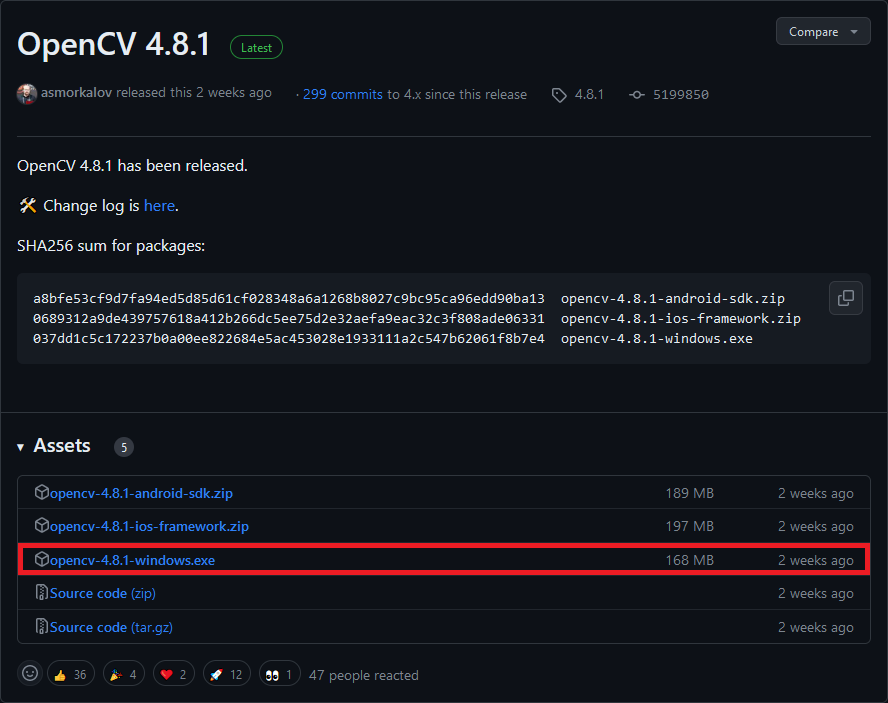
Run the executable once it finishes downloading.
Windows Defender SmartScreen Warning
You might get a warning from Windows that the executable is an unrecognized app. We can bypass this by clicking the More info text, then the Run anyway button.
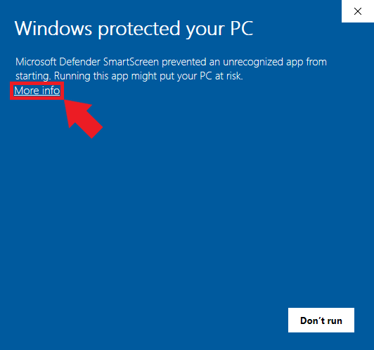
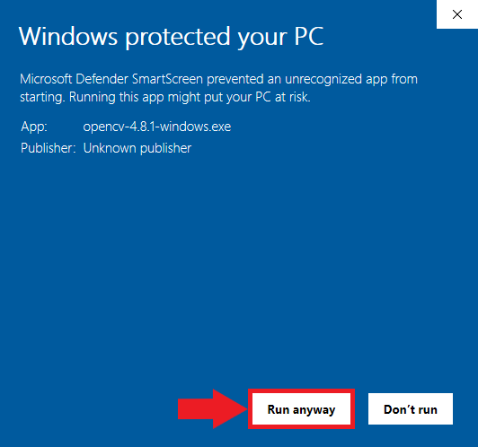
Select Extraction Location
After bypassing the security warning, the executable will prompt us to select a location to extract the opencv folder. We must give Visual Studio this location to access OpenCV’s functionality. I tend to place my C++ dependencies in a dedicated folder for consistency.
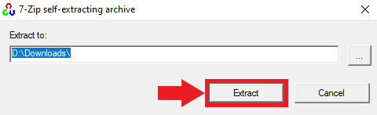
Verify the Extraction
Once the extraction is complete, navigate to the chosen directory to ensure the OpenCV files are present and organized correctly. Inside the opencv folder, we can see a build and a source folder. Everything we need is in the build folder.
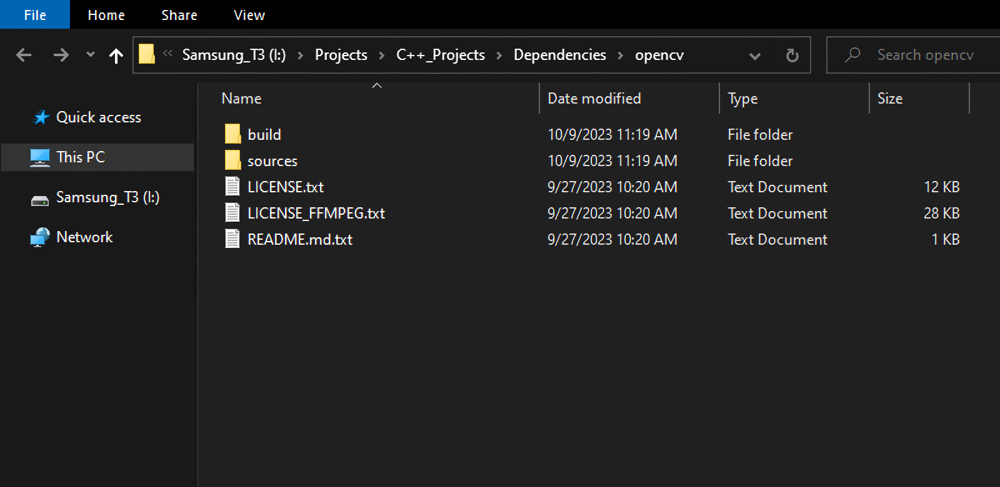
You’ve successfully downloaded and extracted OpenCV from GitHub. Now, we can integrate this library into a Visual Studio project.
Creating a Console App Project
In this section, we’ll create a simple C++ Console Application project.
Launching Visual Studio
Begin by opening Visual Studio. On the welcome screen, locate the Get started section and choose Create a new project.
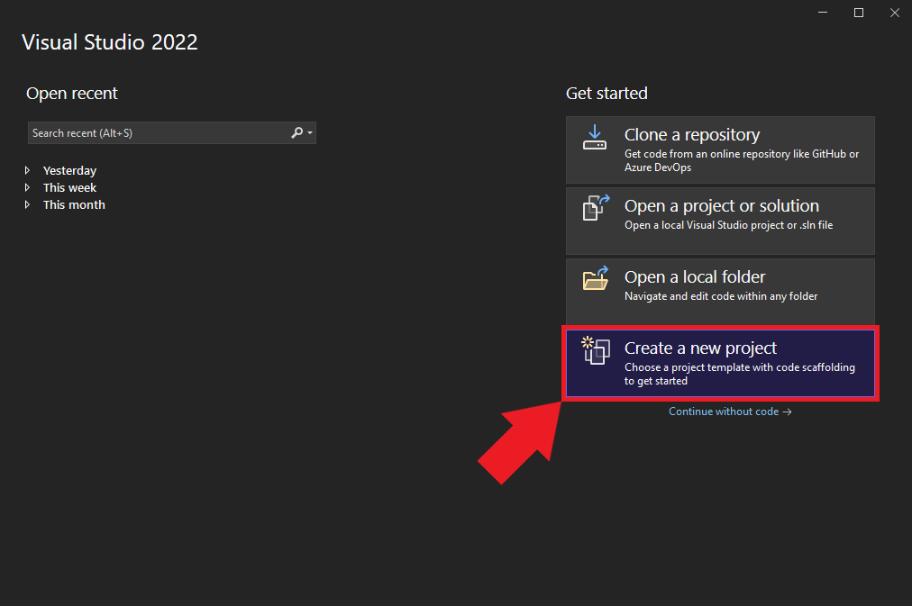
Selecting the Project Type
We’ll use the C++ Console App template for our project. Select the template from the list and click Next to proceed.
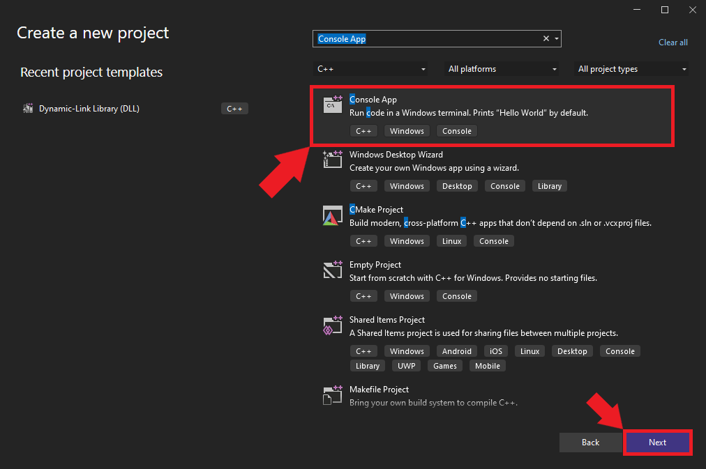
Naming and Locating Your Project
Choose an appropriate name and location for the project and click the Create button. By default, the executable file will use the project name.
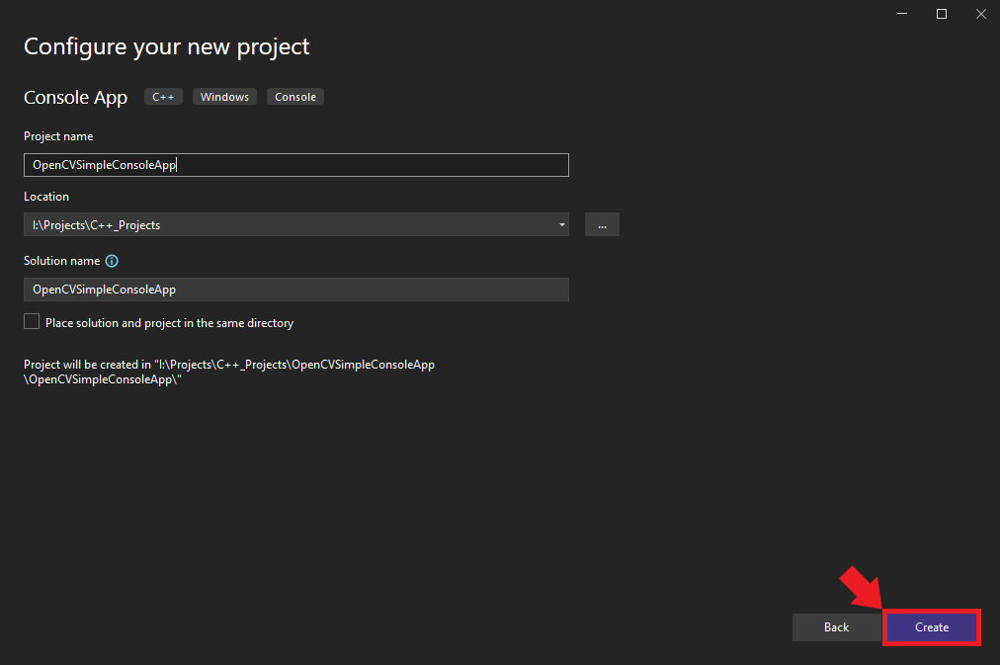
Configuring for Release Build in Visual Studio
Once the project opens in Visual Studio, we must configure it for Release build. At the top of the window, open the Solution Configurations dropdown menu and select Release.
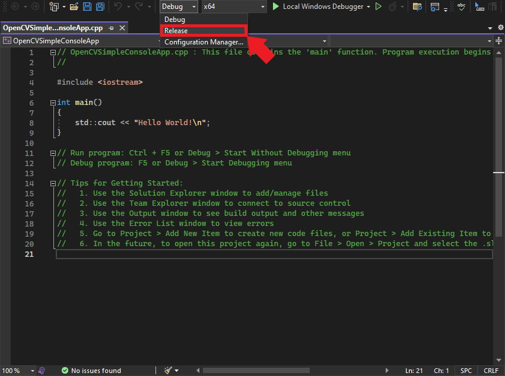
Setting Up Include Directories
For our Visual Studio project to leverage OpenCV, it must be aware of the OpenCV library locations. By setting up include directories, we inform Visual Studio of OpenCV’s whereabouts, allowing us to access its API.
Accessing the Include Directories
In the Properties Window, open on the C/C++ dropdown. Select the Additional Include Directories section and click <Edit..> in the dropdown.
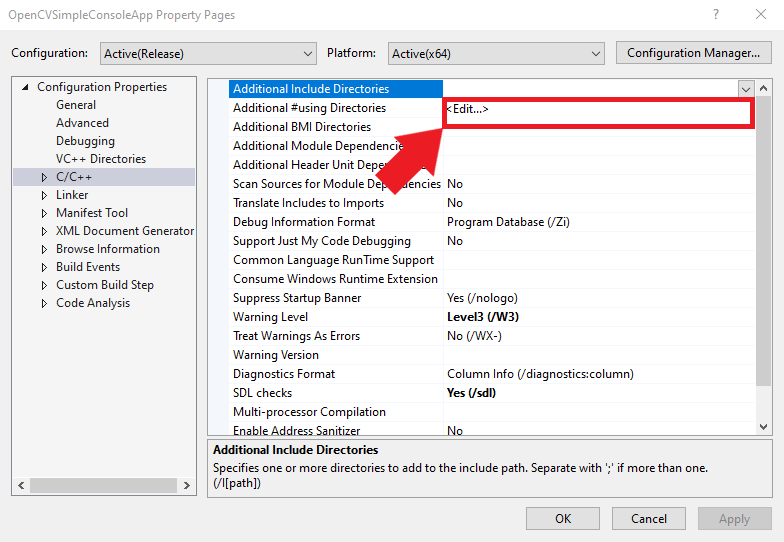
Incorporating OpenCV Path
Add the path for the following folder, replacing <parent-folder-path> with the full path to the parent folder for the OpenCV library, and click OK.
<parent-folder-path>\opencv\build\include
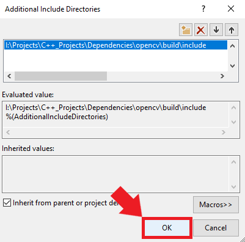
With this setup, Visual Studio now knows where to find OpenCV.
Integrating Linker Dependencies
Now that we’ve directed Visual Studio to the OpenCV includes, we must specify the necessary linker dependencies. These dependencies ensure the compiler knows which library files to consider during the build process.
Specifying the OpenCV Library Path
Add the following path, replacing <parent-folder-path> with the full path to the parent folder for the OpenCV library, and click OK.
<parent-folder-path>\opencv\build\x64\vc16\lib\*.lib
The path to the .lib files can change between OpenCV versions. Verify the library path for the specific OpenCV version you are using.
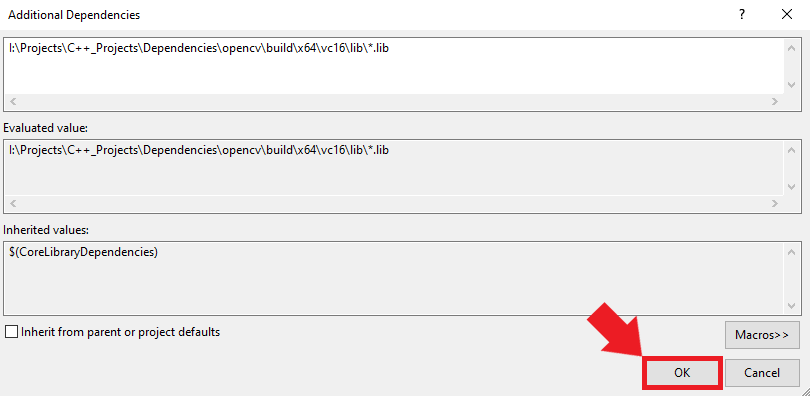
With this configuration in place, Visual Studio has all the necessary references to incorporate OpenCV functionality into our project.
Defining Post-Build Events
Post-build events are crucial for automating specific tasks that should occur right after a successful build. In our case, we must ensure that the necessary DLL files from OpenCV get copied to the project’s build directory. Setting this up will save you the manual effort of copy-pasting files after every build.
Identifying the Necessary DLL
Our executable file will depend on the following DLL file included with OpenCV.
opencv_world481.dll
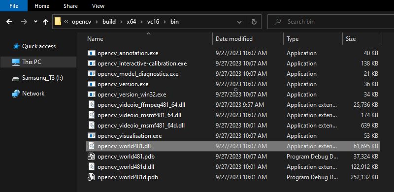
The name and path of the .dll file can change between OpenCV versions. Verify the DLL file path for the specific OpenCV version you are using.
Setting up Post-Build Events
We can add a post-build event in Visual Studio to automatically copy these DLL files to the build folder for the project at compile time. Open the Build Events dropdown in the Properties window and select Post-Build Event. Select Command Line and click <Edit..>.
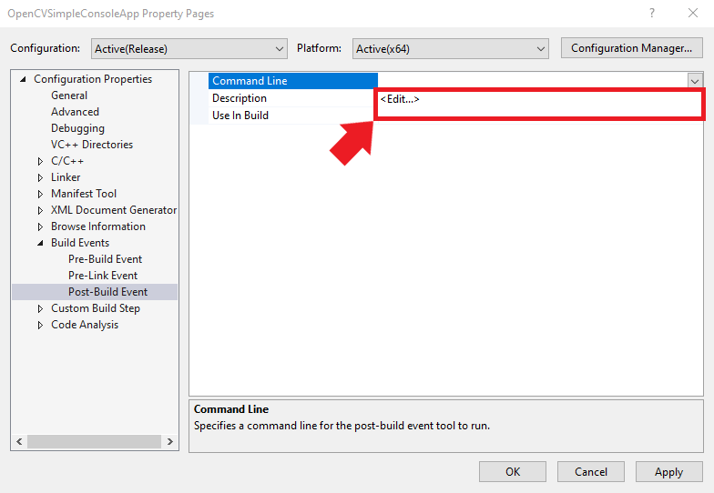
Inputting the Xcopy Command
Add the following command, replacing <parent-folder-path> with the full path to the parent folder for the OpenCV library, and click OK.
xcopy <parent-folder-path>\opencv\build\x64\vc16\bin\opencv_world481.dll $(SolutionDir)$(Platform)\$(Configuration)\ /c /y
This command tells Visual Studio to copy the OpenCV DLL into the appropriate build directory of your project.
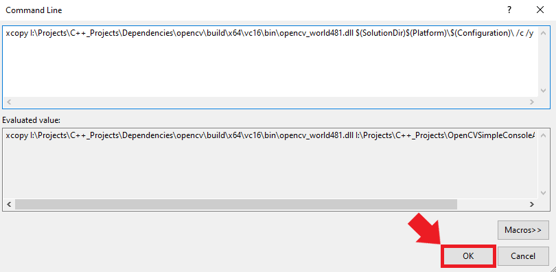
Saving Project Configurations
To finalize all the changes we’ve made, click on the Apply button. With that done, you can safely close out of the Properties window.
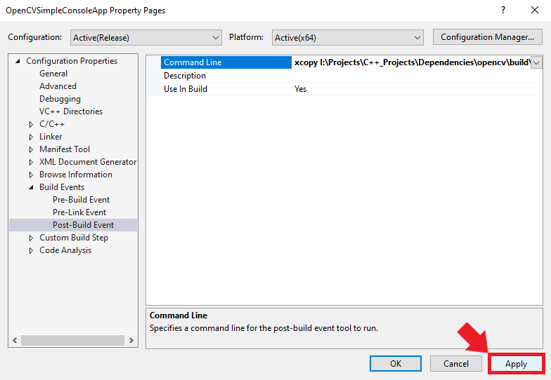
Incorporating OpenCV in Our C++ Code
Now that our Visual Studio project can access OpenCV, it’s time to dive into the code. In this section, we’ll write a simple C++ program that leverages OpenCV to read an image file and display it in a window.
Include OpenCV Headers
Remove the default headers in the C++ file and add the OpenCV header:
#include <opencv2/opencv.hpp>Basic Program Structure
Our main function begins by checking if the user provided an image path as an argument:
if (argc < 2) // Check if an argument is provided
{
std::cerr << "Usage: " << argv[0] << " <path_to_image>" << std::endl;
return -1;
}Loading the Image
We load the image from the provided path using the cv::imread function:
// Read the image using the path provided as an argument
cv::Mat image = cv::imread(argv[1]);It’s essential to verify whether the image loaded successfully:
if (image.empty()) // Check if the image was loaded successfully
{
std::cerr << "Error: Could not open or find the image!" << std::endl;
return -1;
}Displaying the Image
Once our image is successfully loaded, we create a window and display the image using OpenCV functions. We use cv::namedWindow to create a window with the given name and cv::imshow to display our image in that window:
cv::namedWindow("OpenCV Test", cv::WINDOW_AUTOSIZE);
cv::imshow("OpenCV Test", image);Await User Interaction
Finally, we use the cv::waitKey(0) function to pause the program and wait indefinitely for the user to press a key. That ensures our image window remains open until we choose to close it:
cv::waitKey(0);Complete Code
#include <opencv2/opencv.hpp>
int main(int argc, char** argv)
{
if (argc < 2) // Check if an argument is provided
{
std::cerr << "Usage: " << argv[0] << " <path_to_image>" << std::endl;
return -1;
}
// Read the image using the path provided as an argument
cv::Mat image = cv::imread(argv[1]);
if (image.empty()) // Check if the image was loaded successfully
{
std::cerr << "Error: Could not open or find the image!" << std::endl;
return -1;
}
// Display the image in a window named "OpenCV Test"
cv::namedWindow("OpenCV Test", cv::WINDOW_AUTOSIZE);
cv::imshow("OpenCV Test", image);
// Wait for a key press indefinitely
cv::waitKey(0);
return 0;
}Building and Running the Project
Having integrated OpenCV into our code, we are ready to build and test our project. Follow the steps below to compile, run, and validate the Visual Studio C++ project.
Compiling the Code
Open the Build menu at the top of the Visual Studio window and click Build Solution. This action will compile the project and generate the necessary output files in the project directory. Visual Studio will create a new x64 folder in the project directory containing the executable file and the DLL file it depends on.
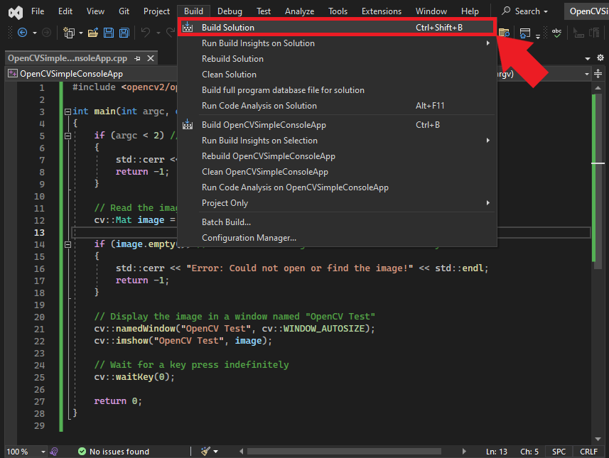
Accessing the Build Output
To locate the compiled application, right-click the project name in the Solution Explorer panel and select Open Folder in File Explorer from the popup menu.
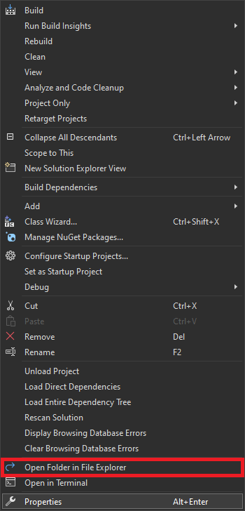
In the new File Explorer window, go to the parent folder and open the x64 → Release subfolder.
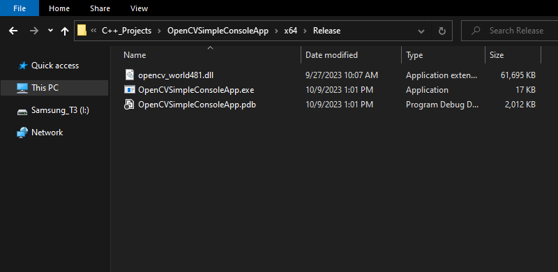
Preparing an Image
Next, we’ll need an image to test the application. I’ll use this photo of the polar nights from Pexels, a free stock photo site.
Running the Application
Now, we can open a command prompt and run the application. Select the address bar in the File Explorer window.
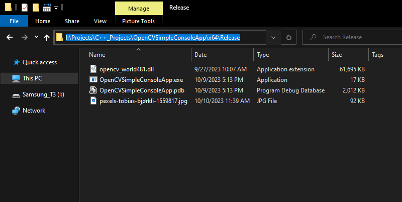
Type cmd into the text box and press Enter.
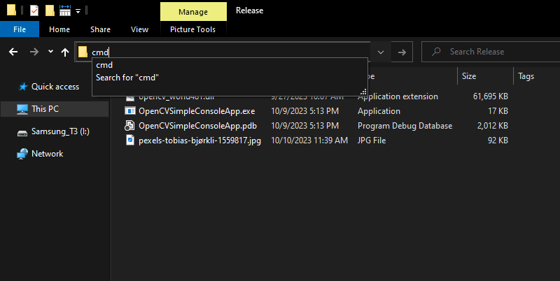
With the command prompt opened in the correct directory, run the application by typing its name followed by the image’s path:
OpenCVSimpleConsoleApp.exe pexels-tobias-bjørkli-1559817.jpg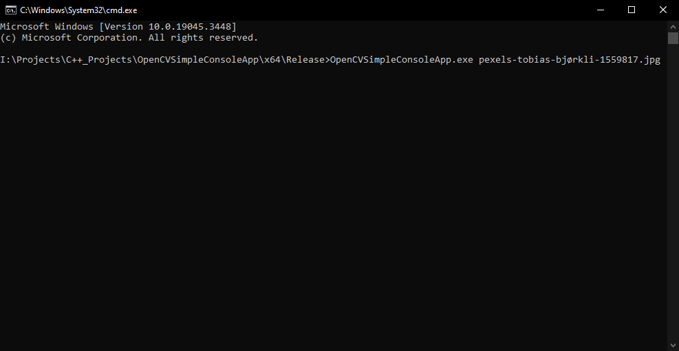
Viewing the Result
After executing the command, the selected image should materialize in a new window, validating that the program runs as intended and that the OpenCV integration was successful.
Congratulations! You’ve successfully set up, built, and run a C++ project in Visual Studio integrated with OpenCV.
Conclusion
In this tutorial, we’ve walked through the process of integrating OpenCV with a Visual Studio C++ project, from obtaining the library to displaying an image using the OpenCV API. This foundational knowledge will be instrumental as you delve deeper into computer vision projects leveraging OpenCV’s capabilities. With your new skills, a plethora of advanced applications await exploration.
- Feel free to post questions or problems related to this tutorial in the comments below. I try to make time to address them on Thursdays and Fridays.
- If you would like to explore my services for your project, you can reach out via email at christian@christianjmills.com